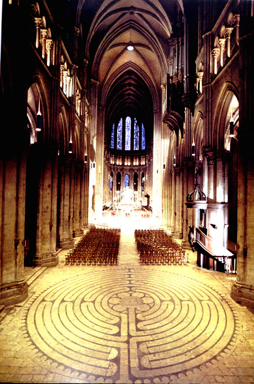
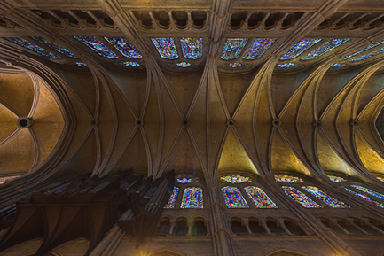
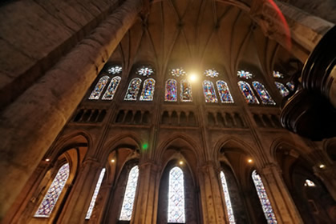
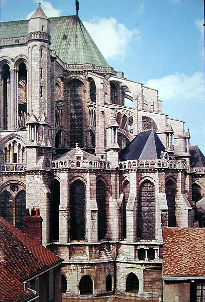
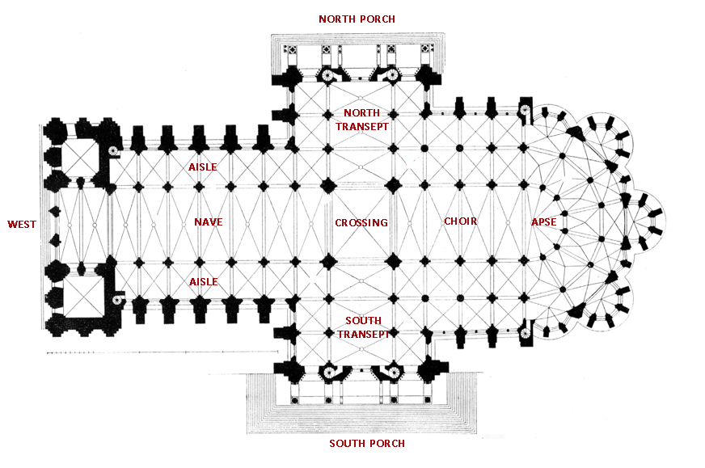

Chartres Cathedral - Architecture
 |
Chartres was built in the architectural style known as Gothic. Its high walls were topped with a stone vault, which was constructed using ribbed groin vaults (a series of 'x's, separated by pointed arches). This type of vaulting caused most of the vertical thrust of the roof to be carried on large piers (complex columns), meaning that the spaces between the piers could be filled with windows.
On the floor of the central part of the nave, there is a maze, or labyrinth, made up of black and white paving stones. It is thought that it was walked by pilgrims to the church, representing an imagined pilgrimage to Jerusalem. |
|

|
 |
| The horizontal thrust of the roof had to be countered by building structures known as flying buttresses on the outside to provide support for the piers. --> |  |
The groundplan of the church is that of a cross. The main entrance was to the west (the left on this diagram), where the two towers are located. The nave is the first part of the church that is entered from the west. It is interrupted by the transept, which is the north-south part that forms the arms of the cross. Two other entrances to the cathedral are located at the north and south ends of the transept. To the east of the transept is the choir, which would have been accessible only to the clergy, and which terminates in a semi-circular apse with smaller semi-circular chapels around it.
